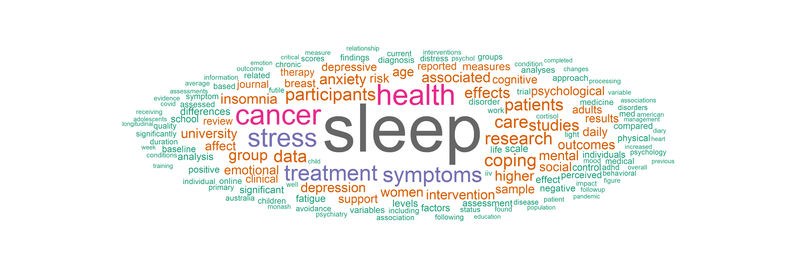

Behavioural Medicine Lab
Through our research, we strive to understand the connections between sleep (behaviour), psychosocial factors, and health. Reflecting our belief that both mental and physical health are important and interconnected, many of our research projects integrate mental and physical health.
Topics our team has expertise in include sleep and insomnia, emotion regulation, depression and anxiety, and cancer.
Methods our team has expertise in include clinical trials, ecological momentary assessment, actigraphy, digitomics1, and statistics.
We leverage the latest science from our team and others to evaluate and optimise interventions to improve sleep, reduce insomnia symptoms, and promote mental health, particularly in people who are or have been treated for cancer or are experiencing other sources of high stress.
Our team is led by Dr. Joshua Wiley and is situated within the Turner Institute for Brain and Mental Health (Turner) within the Sleep and Circadian Rhythms Program. To see an example of the sort of work we do and how we work to feed findings back to our participants and the community, take a look at our projects and look at some of the reports we have sent our participants there.
The word cloud below provides a data-driven summary of the type of work our lab conducts. The word cloud is based off papers published from our lab. Word size shows how commonly specific words appear in our work.

Joshua F. Wiley
Dr. Joshua Wiley is a behavioural medicine researcher currently appointed as a senior lecturer (Asst. Professor) at Monash University in the School of Psychological Sciences and Turner (2016-present). He studied health psychology and behavioural medicine, completing his PhD at the University of California at Los Angeles in 2015. Subsequently, he trained in pragmatic randomised controlled trials (RCTs) through post doctoral with a primary care and prevention group.
Dr. Wiley’s research includes basic science and applied intervention work. In basic science, his work focuses on understanding the daily and longitudinal dynamics of sleep, psychosocial factors and health, emphasising potentially malleable mechanisms driving poor sleep and health. His intervention work targets the basic science mechanisms identified to attempt to improve population health. His intervention research focuses on accessible and feasible sleep/behavioural and emotion regulation interventions with potential for broad dissemination. Aligned with recent calls for personalised medicine, his group combines digitomics and cutting edge data analytics to drive personalised predictions and recommendations to help optimise the content, targetting, and delivery of their interventions. New tools and data analytic pipelines developed for his projects are routinely shared freely and have been picked up in many other studies and projects.
Reflecting the global reach of his research, Dr. Wiley has helped obtain competitive federal grant funding from the Australian National Health and Medical Research Council (NHMRC), Australian Research Council (ARC), United States National Institutes of Health (US NIH), United States Department of Defense (US DoD), and UK Wellcome Trust, totaling >$10 million in funding. He has >100 publications and >6,000 citations (GS).
Connect
- github - Google Scholar
- linkedin - twitter
- joshua.wiley at monash dot edu
Footnotes
Digitally collected data either actively (e.g., completing mood surveys via an app; brief audio recordings of stress experienced in the past few hours) or passively (e.g., using sensor data from smartphones, wearables, mining social media). Often, large amounts of data are generated, either due to many features, many timepoints, or both.↩︎